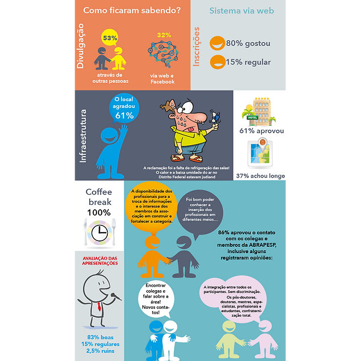
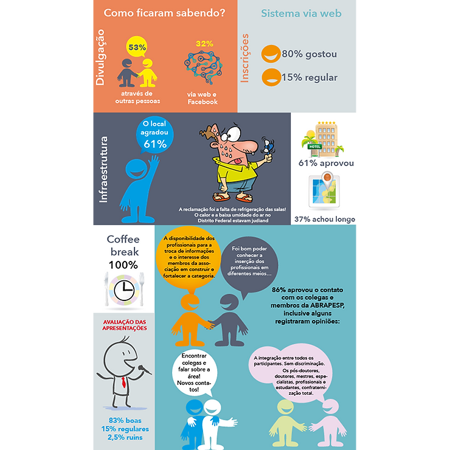

Realizado em Brasília entre os dias 24 e 26 de setembro de 2015, o Congresso da Associação Brasileira de Psicologia do Esporte – ABRAPESP, reuniu profissionais e estudantes das Ciências do Esporte em minicursos, debates e palestras. Nesta quinta edição o que mais marcou foi exatamente a diversidade de representantes de todo o Brasil.
Um mês depois do evento, com a nova diretoria da Associação assumindo efetivamente o dia-a-dia da entidade, foram retomadas as publicações, e, neste mês de novembro, vamos publicar aqui alguns reportes de como foram as atividades.
A primeira delas é o resultado da pesquisa sobre o congresso, respondida via web, pelos participantes. Os respondentes: 53% sócios da entidade e 47% não sócios.
DIVULGAÇÃO
Perguntados sobre como ficaram sabendo do evento, 53% disseram que a informação chegou através de outras pessoas, 32% via web.
Para os participantes o destaque foi o boletim semanal distribuido na fase pré-congresso e as redes sociais. Informações citadas nas questões abertas.
Sobre as inscrições, o formato via web foi aprovado. 80% considerou bom e 15% regular.
INFRAESTRUTURA
O local também agradou 61% dos presentes. A queixa foi a falta de refrigeração das salas, porque o calor e a baixa umidade do ar no Distrito Federal estava judiando de todos. Entre as pessoas que ficaram no hotel indicado pela comissão organizadora do evento 60% gostou, 37% não aprovou em função da distância até o Campus da UCB. 73% responderam sobre o transporte, sendo que 69% achou bom. O destaque foi coffee break com 100% de aprovação.

PONTOS POSITIVOS
“As atividades pré-congresso foram uma estratégia muito bacana: mobiliza os profissionais de diferentes regiões, os coletivos, temas diversos em psicologia do esporte, chama atenção para o congresso e divulga a Associação, conferindo caráter realmente nacional. Então o congresso começou muito antes do momento de culminância. O congresso em Brasília foi bastante diversificado (temáticas, experiência profissional dos palestrantes, tipo de atividade), um propósito claro de interação/integração de áreas em torno da psicologia do esporte. Essa é uma boa discussão que requer mais diálogo, aprofundamento, ampliação do entendimento”.
“Pontos positivos? Todos. Foi um dos melhores congressos que já fui até hoje. Muito bem organizado e palestrantes maravilhosos.””
“Boas palestras, novo site, lançamento dos livros, contatos, organização apresentação dos conteúdos no congresso e a participação de atletas pesquisadores na área”
“Pontos positivos: cidade, animação dos participantes em agregar, ausência de “brigas” politicas (veladas ou explícitas), presença de representantes do CFP e CONFEF !!! (trazer Fisio e Nutri tb e medicina esporte tb !!)”
PONTOS NEGATIVOS
“O calor, em algumas salas os ventiladores não funcionaram”
“Falta de opções de meios de transportes do hotel até o local do evento”.
“Passou muito rápido. Há que se ter certo cuidado com os participantes que estão em processo inicial de formação (faculdade), pois algumas opiniões dos palestrantes são extremamente pessoais e às vezes não representa, não parece coerente com a visão, propósito da Associação. Talvez pensar alguma estratégia, sistematização, documento que ajude a preservar isso”.
“Questões técnicas: A falta de placas de sinalização no interior da universidade. O que não atrapalhou o evento.”
“Minicursos concentrados em só um dia. Se fosse diluídos ao longo do congresso daria oportunidade das pessoas participarem mais”.
“Restaurantes um pouco distantes para andar em um lugar muito quente. Os minicursos poderiam ter sido mais aprofundados”.
SUGESTÕES PARA OS PRÓXIMOS
“Que possa estimular a maior participação dos alunos da graduação e que faça mais debates entre pesquisadores”
“Hotel indicado mais próximo ao local do evento. Ou local do evento mais acessível”.
“Manutenção da organização e adequação dos temas”
“Que englobe uma visão mais abrangente do esporte. Há uma tendência, até compreensível, mas que precisa constantemente ser revista, que é privilegiar o esporte de alto rendimento, como se a psicologia do esporte se referisse somente a este contexto de manifestação. Reduz, portanto, seu importante papel, seu campo de atuação”.
“Continuar assim”.
“Stands de venda de livros e outros materiais de interesse dos paixolofoa do esporte. Atividades esportivas na programação”
“Que seja em um local menos quente””
“Expandir os eventos pré-congresso por todas as regiões”.
“Mais atividades simultaneamente, pois cada participante possui objetivos diferentes e, assim, o tempo curto pode ser melhor aproveitado.”